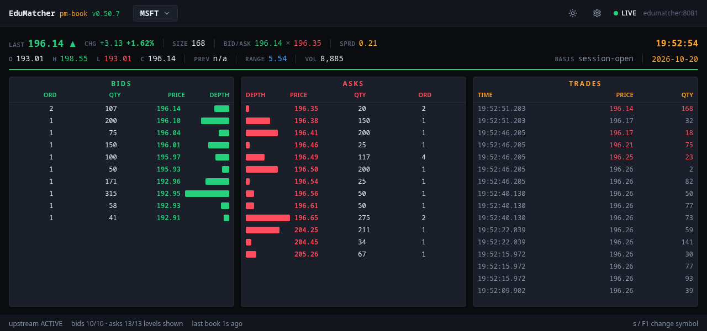
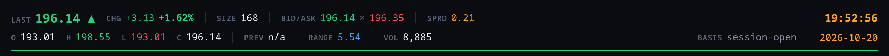

Order Book Viewer (pm-book)¶
Learning objectives
After reading this page you will understand:
- What the order book viewer shows, and how it relates to
pm-viewer - How to open it, and what it needs from the exchange
- What every field of the statistics header, the two ladders and the trade tape means
- How to read the connection states and the footer without mistaking a quiet market for a broken one
Overview¶
pm-book is the web companion to the pm-viewer
terminal application: one symbol's full order book — every price level on both
sides — the session statistics above it and a trade tape beside it, in a
browser. Its source code lives in web-apps/book-gui/.
Like TapeDeck it is read-only. There is no order
entry, no login screen and no write path from the browser into the exchange.
Use it on a classroom projector while students trade against a book, beside
the Trading GUI to watch the effect of your own orders, or
on any machine where pm-viewer would need a terminal and direct access to the
engine's message bus.
Everything pm-viewer shows is here, field for field: last price and change,
bid, ask and spread, open/high/low/close, previous close, range, volume, and the
basis the change is measured against. What the browser adds is symbol switching
by URL, a dark and a light theme, font scaling, and a layout that fills
whatever screen it is shown on.
Opening it¶
The order book viewer runs on port 8094: open http://localhost:8094, or
the address your instructor gives you. There is no login. It opens on the
first listed symbol; press s to pick another. It starts with the rest of the
exchange in the container setup (./edumatcher.sh start, or make up-all
from a source checkout).
It reads everything — the book, the trades and the history behind the
statistics — through the API gateway (pm-api-gwy), and the session phase
from the market-data gateway (pm-md-gwy). Without pm-stats the statistics
cover only the trades seen since the book was opened, and the header says so.
How to install, start and configure it is in the Operator's Guide chapter Deploying the Order Book Viewer.
A tour of the interface¶

The top bar, the statistics header, the BIDS and ASKS ladders with depth
bars scaled to the largest level on screen, the trade tape coloured by tick,
and the footer: upstream ACTIVE, how many levels of each side are shown, and
the age of the last book update.
The page has four parts, top to bottom: the top bar, the statistics header, the three panels BIDS, ASKS and TRADES, and the footer.
Top bar¶
EduMatcher pm-book v<version>on the left, as in every EduMatcher web application.- The symbol picker — the current symbol with a drop-down arrow. Click it,
or press
sorF1anywhere on the page. - The session indicator — the exchange session phase as a coloured badge,
the next phase and the time left to it (
Continuous → Closing Auction in 03:08), and the clock in the exchange session timezone, exactly as the Trading GUI shows it. The countdown appears only while a transition is scheduled; the badge readsUnknownuntilpm-md-gwyhas reported the phase, and whenever it cannot be reached. - Theme (sun/moon): switches between the dark and the light palette.
- Settings (cog): font size, maximum levels and zebra rows — see Settings.
- Connection indicator:
LIVE,RECONNECTINGorOFFLINE, followed by thehost:portof thepm-api-gwyinstance the bridge reads — see Connection states.
Choosing a symbol¶
The picker works as pm-viewer's does. Typing narrows the list by prefix
(A offers the symbols that start with A, not every symbol containing one),
↑/↓ move the selection, Enter switches and Esc closes. A click
works too.
Every book has its own URL: /book/<SYMBOL>, for example
http://localhost:8094/book/AAPL. Bookmark it, or open several tabs on different
symbols — each tab watches one symbol. The bare address / opens the book you
viewed last in this browser, or the first listed symbol. A URL naming a symbol
that is not listed shows <SYMBOL> is not a listed symbol instead of an empty
book.
The statistics header¶

MSFT up 1.62%. This exchange has no previous close on record yet, so Prev
is n/a and change is measured from the session open (Basis session-open).
The green line under the header: the close is above that reference.
Two rows, the same fields as pm-viewer's header. The reference price that
change and colour are measured against is the previous close when one is known,
otherwise the session open.
| Field | Meaning |
|---|---|
| Last | Price of the last trade, with ▲ / ▼ / ▬ against the reference, green when up and red when down |
| Chg | Last minus the reference, and the same as a percentage |
| Size | Quantity of the last trade |
| Bid/Ask | Best bid (green) × best ask (red) |
| Sprd | Ask minus bid |
| clock | Current time in the exchange session timezone (hover for the zone name) |
| O / H / L / C | The session's open, high, low and latest close, from every trade of the day |
| Prev | The previous trading day's close, n/a when there is none |
| Range | High minus low |
| Vol | Total quantity traded this session |
| Basis | What the change is measured against: prev-close, session-open, or live since HH:MM |
| date | Today's date in the exchange session timezone |
A thin line under the header shows the session's direction: green when the close is above the reference, red when below, grey when level.
What live since HH:MM means
When the bridge cannot read the session's history — pm-stats is not
running, or its database does not exist yet — it still shows the book and
records every trade it sees from then on. The statistics are then correct
only for that period, and the Basis field says so in amber, with the time
the recording started. This is the web equivalent of running pm-viewer
without a stats database. Times are then in UTC, because the session
timezone also comes from pm-stats.
All times, the clock and the date use the exchange session timezone recorded by
pm-stats, not the timezone of the browser — so a viewer in another country
reads the same times as the exchange.
BIDS and ASKS¶
The two ladders mirror each other about the centre, as in pm-viewer, with the
best price at the top of each:
| BIDS columns | ASKS columns | |
|---|---|---|
| Ord — number of resting orders at the level | Depth — bar, growing outward to the right | |
| Qty — total quantity at the level | Price | |
| Price | Qty | |
| Depth — bar, growing outward to the left | Ord |
The depth bars are scaled to the largest quantity among the levels on screen, so the largest visible level fills its bar. Prices use each symbol's own number of decimals from the reference data.
The ladders show the levels the gateway publishes (aggregated per price — never individual orders).
TRADES¶
The trade tape, newest first: Time (session timezone, to the millisecond), Price and Qty. Each print is coloured by its tick — green when its price is above the print before it, red when below, grey when equal.
When you open a book the tape already holds the session's earlier trades, read
from history. The bridge keeps the newest TAPE_MAX (500) prints per symbol;
the statistics count every trade of the session regardless.
How many levels are shown¶
The three panels share one row count. By default (Max levels: Fit) it is
whatever fits the window, like pm-viewer in a terminal — make the window taller
to see deeper into the book. The Settings popover can cap it at 10, 20 or 50
levels, like pm-viewer --depth.
The panels never reflow into a single column: in a narrow window the page scrolls sideways instead.
Footer¶
upstream ACTIVE— the state of the bridge's connection topm-api-gwy; shown in amber whenever it is anything else.bids 12/12 · asks 9/15 levels shown— how many of each side's levels are on screen, out of how many there are. A truncated ladder is never silent:9/15means six more ask levels exist below the fold.last book 2s ago— the age of the most recent book update. It keeps counting in a quiet market; that is normal, and the book shown is still current.no book yetmeans the symbol has not had a book since it was opened.s / F1 change symbol— the keyboard hint.
Settings¶
The cog in the top bar opens the settings. All of them are stored per browser.
| Setting | Choices | Default | Notes |
|---|---|---|---|
| Font size | XS, S, M, L, XL, XXL | XS | Scales the whole page. Works in Chrome and Safari only |
| Max levels | Fit, 10, 20, 50 | Fit | pm-viewer's --depth |
| Zebra rows | on / off | off | pm-viewer's --zebra-lines |
| Theme (top-bar button) | dark / light | dark | Light is meant for bright rooms and projectors |
Connection states¶
Two connections are involved, and the viewer reports both:
| Indicator | Meaning | What you see |
|---|---|---|
LIVE (green) |
The browser is connected to the bridge, and the bridge to pm-api-gwy |
The live book |
RECONNECTING (amber) |
The browser is connected to the bridge, but the bridge's upstream connection is down or not yet authenticated | The last values received, with upstream RECONNECTING or upstream DOWN in the footer |
OFFLINE (red) |
The browser has lost its connection to the bridge | A Disconnected from pm-book-bridge banner; values are hidden rather than shown stale. The page reconnects by itself |
The bridge reconnects upstream by itself, backing off from half a second to 15
seconds between attempts. When a working connection drops, the footer shows
upstream RECONNECTING for the first 30 seconds (UPSTREAM_DOWN_AFTER_SEC) and
upstream DOWN after that. Before the first successful connection, and at once
when pm-api-gwy rejects the key, it shows upstream DOWN.
No trade is lost across a short outage. On reconnect the bridge asks
pm-api-gwy to resume each symbol's trades from the last one it saw. If the
gap is longer than the gateway retains (market_data_cache_sec, 60 seconds by
default — see API Gateway), the bridge rebuilds that
symbol's statistics and tape from history instead, and logs that it did.
Troubleshooting¶
| Symptom | Meaning | What to do |
|---|---|---|
The top bar stays RECONNECTING |
The viewer cannot read from the API gateway | Tell your operator |
The session badge in the top bar stays Unknown |
The viewer cannot reach the market-data gateway | Normal for a second or two at exchange start; otherwise tell your operator |
| Red Disconnected from pm-book-bridge banner | The page has lost its connection to the viewer's server | Reload the page; if it persists, tell your operator |
Basis says live since HH:MM; times are in UTC |
The session's history cannot be read, so the statistics cover only what the viewer has seen since then | Tell your operator that pm-stats is not running |
| Waiting for the symbol list… never goes away | The viewer cannot read the symbol list | As for RECONNECTING |
<SYMBOL> is not a listed symbol |
The URL names a symbol the exchange does not list | Press s and choose one |
| A ladder ends before the book does | More levels exist than fit the window, or Max levels caps them | Read the footer (asks 9/15); make the window taller or set Max levels to Fit |
Problems with starting or configuring the viewer are covered in Deploying the Order Book Viewer → Troubleshooting.
Related documentation¶
pm-viewer— Order Book Viewer — the terminal application this one mirrors- API Gateway — the market-data WebSocket and history endpoints the bridge reads
- Statistics and Reporting —
pm-stats, which records the history - Installation — the container stack,
.envand the read-only API key - Trader Information Terminal — the sibling read-only display, with which it shares its structure and deployment conventions
- Centralized Log Server — the bridge's optional logging destination
docs-design/EduMatcher-Book-GUI.md— the design document (repository checkout only)web-apps/book-gui/README.md— the implementation's own reference (repository checkout only)